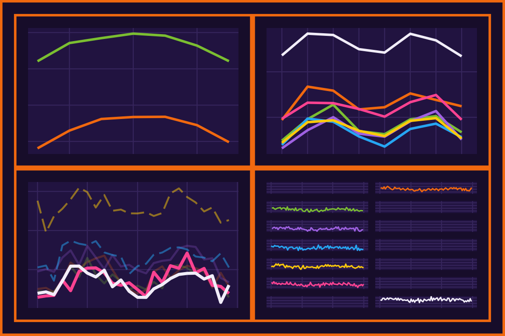
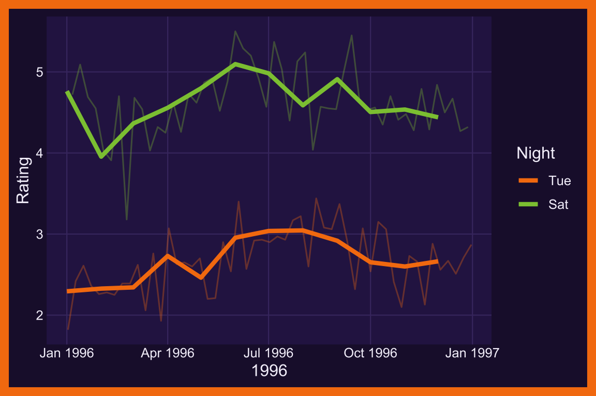
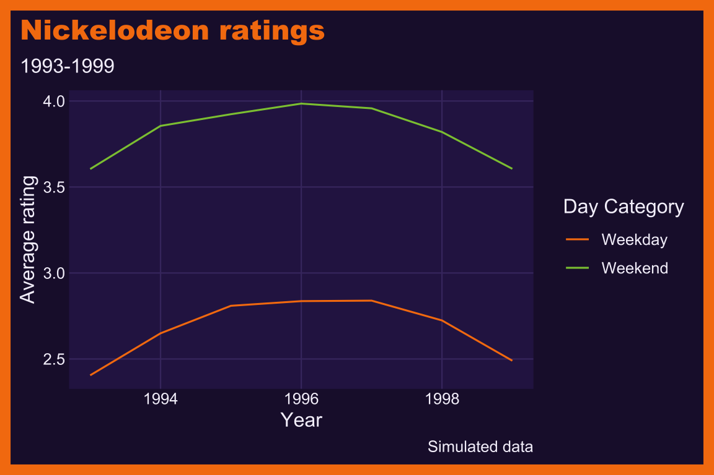
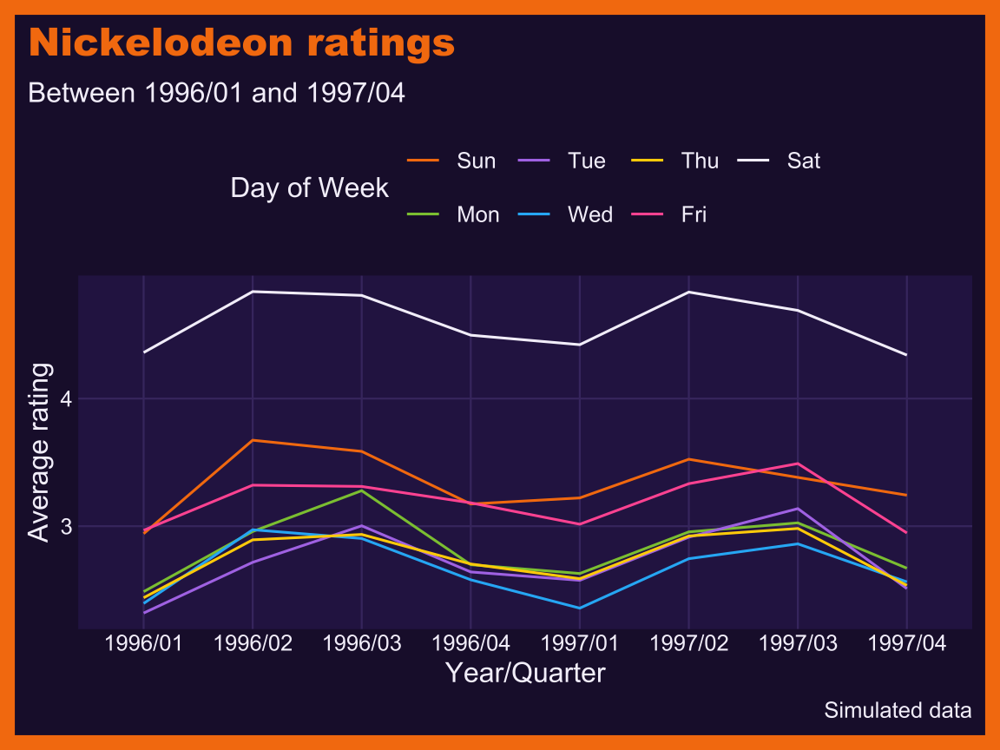
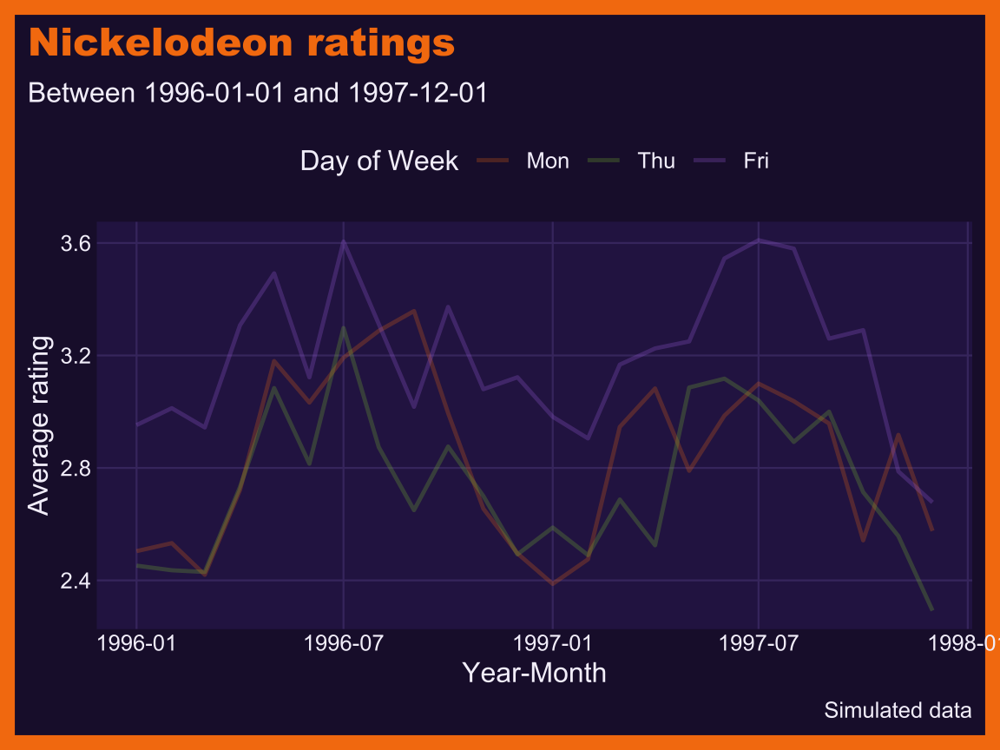
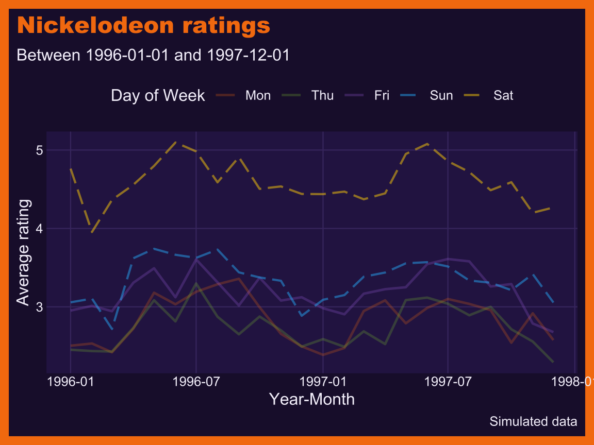
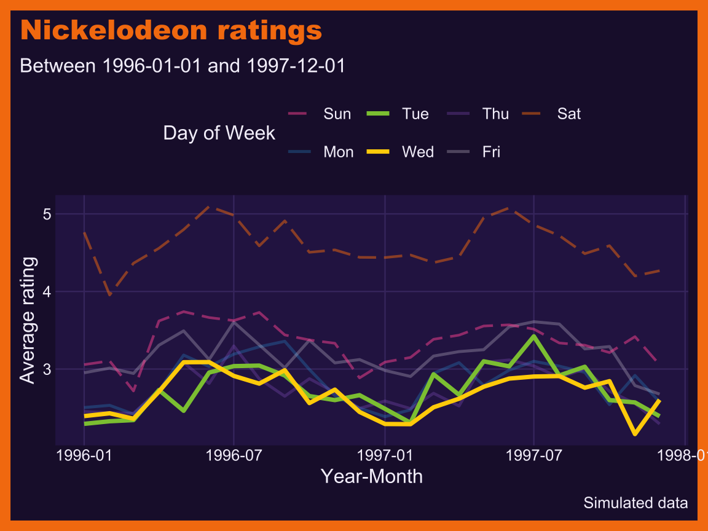
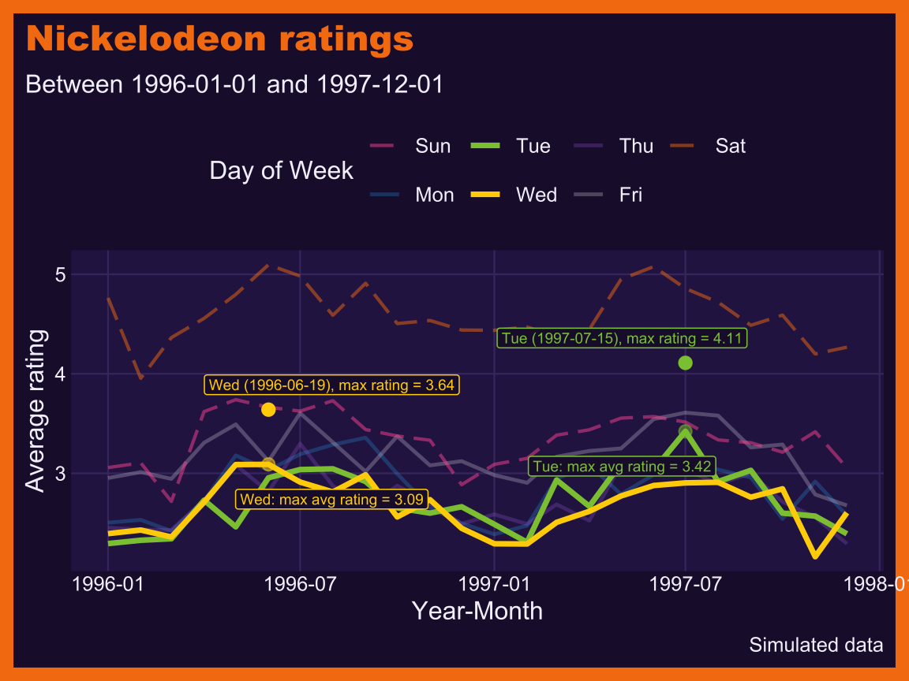
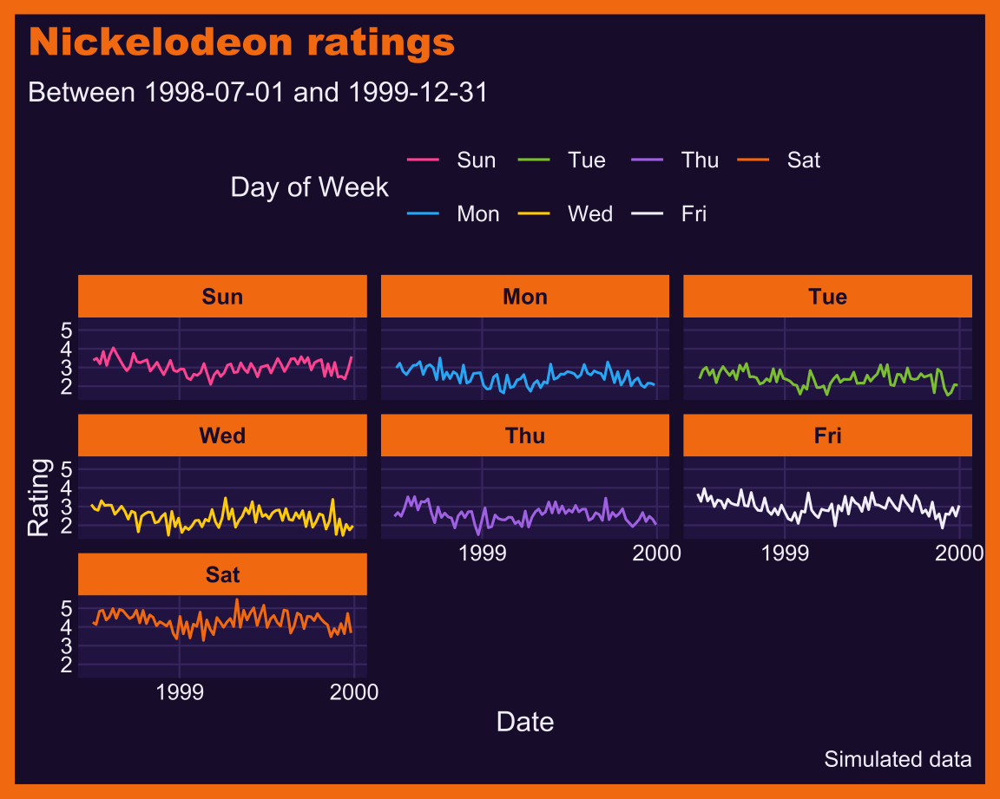
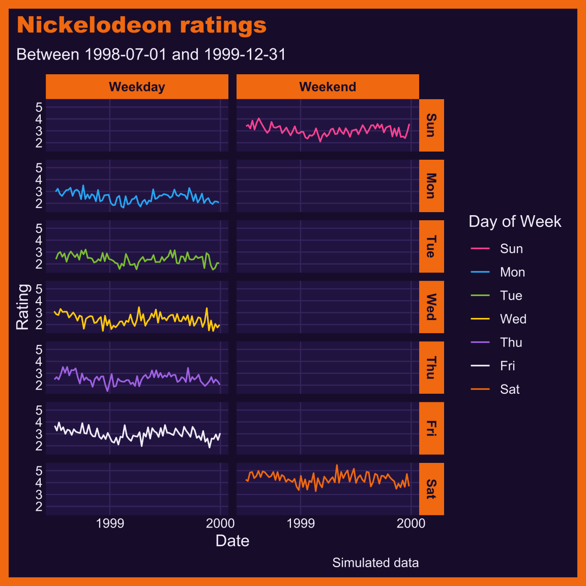

29 Grouped line graphs
29.1 Description
Grouped line graphs use color, line style, and faceting to show group changes over time for a continuous variable across categorical levels.
29.2 Set up
PACKAGES:
Install packages.
show/hide
library(ggplot2)
library(dplyr) # for tibble() and data manipulation
library(lubridate) # for working with datesDATA:
Every Saturday night starting in 1992, Nickelodeon kids parked themselves in front of SNICK (Clarissa Explains It All, Are You Afraid of the Dark?, and All That) and the orange couch. We’ll simulate a Nielsen style rating for Nickelodeon for every day from 1993 through 1999. Each night of the week gets its own average (night_avg), with Saturday on top. Two smooth patterns get added to the nightly averages: a trend that rises through the middle of the decade and falls off near the end, and a summer bump when school is out. Then rnorm() adds day to day noise. Setting the seed with set.seed() means you’ll get the same 2,556 days every time you run the code below.
We’ll also create the date variables we need for grouping:
day_of_week(a factor fromwday(), unordered so the graphs use the theme colors) andday_category("Weekday"or"Weekend")yr_mnth(the first day of each month) andyr_qtr(the year and quarter)
show/hide
set.seed(1992)
nick_ratings <- tibble(
date = seq(as.Date("1993-01-01"), as.Date("1999-12-31"), by = "day")) |>
mutate(
year = year(date),
month = month(date),
day_of_week = factor(wday(date, label = TRUE), ordered = FALSE),
day_category = if_else(day_of_week %in% c("Sat", "Sun"),
"Weekend", "Weekday"),
yr_mnth = floor_date(date, unit = "month"),
yr_qtr = factor(paste0(year, "/0", quarter(date)), ordered = TRUE),
night_avg = c(Sun = 3.0, Mon = 2.4, Tue = 2.3, Wed = 2.3,
Thu = 2.4, Fri = 2.8, Sat = 4.2)[as.character(day_of_week)],
trend = 0.25 * (year - 1993) - 0.04 * (year - 1993)^2,
summer = 0.3 * sin(2 * pi * (month - 4) / 12),
rating = round(rnorm(n(), mean = night_avg + trend + summer,
sd = 0.35), 2)) |>
select(-night_avg, -trend, -summer)
glimpse(nick_ratings)
#> Rows: 2,556
#> Columns: 8
#> $ date <date> 1993-01-01, 1993-01-02, 19…
#> $ year <dbl> 1993, 1993, 1993, 1993, 199…
#> $ month <dbl> 1, 1, 1, 1, 1, 1, 1, 1, 1, …
#> $ day_of_week <fct> Fri, Sat, Sun, Mon, Tue, We…
#> $ day_category <chr> "Weekday", "Weekend", "Week…
#> $ yr_mnth <date> 1993-01-01, 1993-01-01, 19…
#> $ yr_qtr <ord> 1993/01, 1993/01, 1993/01, …
#> $ rating <dbl> 2.61, 4.20, 2.65, 1.81, 2.1…We’ll use these data in the More info section for more line graphs, but for now:
Group
nick_ratingsonyearandday_categoryCalculate the average
ratingasavg_ratingStore the data in
avg_rating_day_cat_yr.
show/hide
avg_rating_day_cat_yr <- nick_ratings |>
group_by(year, day_category) |>
summarise(avg_rating = mean(rating)) |>
ungroup()
#> `summarise()` has regrouped the output.
#> ℹ Summaries were computed grouped by year and
#> day_category.
#> ℹ Output is grouped by year.
#> ℹ Use `summarise(.groups = "drop_last")` to
#> silence this message.
#> ℹ Use `summarise(.by = c(year, day_category))`
#> for per-operation grouping (`?dplyr::dplyr_by`)
#> instead.
glimpse(avg_rating_day_cat_yr)
#> Rows: 14
#> Columns: 3
#> $ year <dbl> 1993, 1993, 1994, 1994, 199…
#> $ day_category <chr> "Weekday", "Weekend", "Week…
#> $ avg_rating <dbl> 2.405057, 3.604519, 2.64930…29.3 Distribution
A grouped line graph rarely plots raw values. It plots an average for each group at each point in time, and averages behave very differently from the values they’re built from. Below we’ll move from the daily ratings, to a picture, to the formula, and see why averaging makes the group differences easy to see.
COUNT IT:
Start with the first week of 1996.
show/hide
nick_ratings |>
filter(year == 1996) |>
select(date, day_of_week, rating) |>
head(7)Saturday is the clear winner this week, but the weeknights are close enough that the order could flip next week. Below we count every night in 1996 and calculate the mean and standard deviation for each night of the week.
show/hide
nick_1996 <- nick_ratings |>
filter(year == 1996) |>
group_by(day_of_week) |>
summarise(n = n(), mean = mean(rating), sd = sd(rating))
nick_1996Each night of the week shows up 52 or 53 times in a year. The Saturday mean (4.63) is well above the Tuesday mean (2.67), but any single night wanders about 0.4 rating points from its mean.
DRAW IT:
The graph below draws every Tuesday and Saturday rating from 1996 as a thin, faded line, then adds each month’s average as a thick line. The daily lines zig and zag, while the monthly averages are much smoother.
show/hide
tue_sat_1996 <- nick_ratings |>
filter(year == 1996, day_of_week %in% c("Tue", "Sat"))
tue_sat_monthly <- tue_sat_1996 |>
group_by(yr_mnth, day_of_week) |>
summarise(avg_rating = mean(rating), .groups = "drop")
ggplot() +
geom_line(data = tue_sat_1996,
aes(x = date, y = rating, color = day_of_week),
alpha = 1 / 3) +
geom_line(data = tue_sat_monthly,
aes(x = yr_mnth, y = avg_rating, color = day_of_week),
linewidth = 1.5) +
labs(x = "1996", y = "Rating", color = "Night")
NAME IT:
Each day’s rating is a draw from a normal distribution centered on that night’s average for that time of year:
\[ \text{rating}_d \sim \text{Normal}\left(\mu_{\text{night}} + \text{trend}_{\text{year}} + \text{summer}_{\text{month}}, \; \sigma = 0.35\right) \]
The standard deviation of an average of \(n\) draws is \(\sigma / \sqrt{n}\) (the standard error). A monthly average of about four Saturdays wobbles by about \(0.35 / \sqrt{4} \approx 0.18\) points, and a yearly average of about 52 Saturdays wobbles by only \(0.35 / \sqrt{52} \approx 0.05\) points. That’s why the yearly avg_rating lines below are so smooth, and why the gap between weekdays and weekends stands out. The sd column in COUNT IT is a little larger than 0.35 because it also includes the summer bump. Try changing sd = 0.35 to sd = 1 and watch the daily lines in DRAW IT turn into a tangle while the yearly lines barely move.
29.4 Grammar
CODE:
Create labels with
labs()Map
yearto thex,avg_ratingto they, andday_categorytogroupAdd the
geom_line()layer and mapday_categoryto color (insideaes())
show/hide
labs_line_graph <- labs(title = "Nickelodeon ratings",
caption = "Simulated data",
subtitle = "1993-1999",
y = "Average rating",
x = "Year",
color = "Day Category")
ggp2_line <- ggplot(data = avg_rating_day_cat_yr,
mapping = aes(x = year,
y = avg_rating,
group = day_category)) +
geom_line(aes(color = day_category))
ggp2_line +
labs_line_graphGRAPH:

29.5 More info
Line graphs are great for displaying relationships across variables with multiple groups (or levels). We can also use facets for multiple comparisons (i.e., small multiples).
29.5.1 Groups
In the previous graph, we can see the ratings peak around 1996 or 1997.
We’ll create another summarized dataset from
nick_ratings, but this time we restrict the observations to the ratings between1996and1997Group the data on
yr_qtrandday_of_weekThen calculate the average
ratingasavg_rating
show/hide
avg_rating_dow_qtr <- nick_ratings |>
filter(year >= 1996 & year <= 1997) |>
group_by(yr_qtr, day_of_week) |>
summarise(avg_rating = mean(rating)) |>
ungroup()
glimpse(avg_rating_dow_qtr)
#> Rows: 56
#> Columns: 3
#> $ yr_qtr <ord> 1996/01, 1996/01, 1996/01, 1…
#> $ day_of_week <fct> Sun, Mon, Tue, Wed, Thu, Fri…
#> $ avg_rating <dbl> 2.941538, 2.486923, 2.319231…Now when we create our line graph, we will have a categorical variable with seven levels (day_of_week):
Create subtitle using
paste0()to ensure it’s accurate if/when the underlying data is updated.Move the legend to the top of the graph using
theme(legend.position = "top")(to improve readability).
show/hide
# here we create the labels (with the subtitle updating with the data)
labs_line_graph_grp <- labs(title = "Nickelodeon ratings",
caption = "Simulated data",
subtitle = paste0("Between ",
min(avg_rating_dow_qtr$yr_qtr),
" and ",
max(avg_rating_dow_qtr$yr_qtr)),
y = "Average rating",
x = "Year/Quarter",
color = "Day of Week")show/hide
# Build layer with yr_qtr and day_of_week
ggp2_line_grp <- ggplot(data = avg_rating_dow_qtr,
mapping = aes(x = yr_qtr,
y = avg_rating,
group = day_of_week)) +
geom_line(aes(color = day_of_week))
# move legend
ggp2_line_grp +
labs_line_graph_grp +
theme(legend.position = "top")
The Saturday line sits on top of every quarter (that’s SNICK), and every night rises and falls with the summer bump.
29.5.2 Line Styles
We can make it easier to distinguish between lines in our graph by adjusting the line style (
linetypeandlinewidth), or by changing overall opacity (alpha).We’ll work through some examples below using another subset from
nick_ratings.
DATA:
show/hide
avg_rating_dow_mnth <- nick_ratings |>
filter(year >= 1996 & year <= 1997) |>
group_by(yr_mnth, day_of_week) |>
summarise(avg_rating = mean(rating)) |>
ungroup()
glimpse(avg_rating_dow_mnth)
#> Rows: 168
#> Columns: 3
#> $ yr_mnth <date> 1996-01-01, 1996-01-01, 199…
#> $ day_of_week <fct> Sun, Mon, Tue, Wed, Thu, Fri…
#> $ avg_rating <dbl> 3.0575, 2.5040, 2.2940, 2.39…show/hide
labs_line_styles <- labs(
title = "Nickelodeon ratings",
caption = "Simulated data",
subtitle = paste0(
"Between ",
min(avg_rating_dow_mnth$yr_mnth),
" and ",
max(avg_rating_dow_mnth$yr_mnth)
),
y = "Average rating",
x = "Year-Month",
color = "Day of Week"
)29.5.3 alpha & linewidth
Line styles are an excellent tool for highlighting or emphasizing certain lines over others.
- We’ll start by creating a line graph layer for Monday (
"Mon"), Thursday ("Thu"), and Friday ("Fri") adjusting the opacity withalpha.
show/hide
ggp2_line_mon_thu_fri <-
ggplot(data = filter(avg_rating_dow_mnth,
day_of_week %in% c("Mon", "Thu", "Fri"))) +
geom_line(
aes(x = yr_mnth,
y = avg_rating,
group = day_of_week,
color = day_of_week),
alpha = 1 / 4,
linewidth = 0.85)
# layer 1
ggp2_line_mon_thu_fri +
labs_line_styles +
theme(legend.position = "top")
29.5.4 linetype
Then we’ll change the linetype of Saturday and Sunday to "longdash" (and make this somewhat transparent with a slightly higher alpha).
show/hide
ggp2_line_sat_sun <- ggp2_line_mon_thu_fri +
geom_line(data = filter(avg_rating_dow_mnth,
day_of_week %in% c("Sat", "Sun")),
aes(x = yr_mnth,
y = avg_rating,
group = day_of_week,
color = day_of_week),
alpha = 1 / 2,
linewidth = 0.75,
linetype = "longdash")
# layers 1 & 2
ggp2_line_sat_sun +
labs_line_styles +
theme(legend.position = "top")
29.5.5 Color palettes
Add
geom_line()for Tuesday and Wednesday, and set the colors manually withscale_color_manual()(below we use a named vector of SNICK colors).We also manually set the legend order by supplying the original factor levels to the
breaksargument.
show/hide
# original factor levels
lev_order <- levels(avg_rating_dow_mnth$day_of_week)
# SNICK colors
snick_pal <- c(Sun = "#FF5FA2", Mon = "#29B6F6", Tue = "#8CC63F",
Wed = "#FFD200", Thu = "#B07CE8", Fri = "#F4F1FA",
Sat = "#F57D0D")
# layer 3
ggp2_line_pal_d <- ggp2_line_sat_sun +
# add line
geom_line(data = filter(avg_rating_dow_mnth,
day_of_week %in% c("Tue", "Wed")),
aes(x = yr_mnth,
y = avg_rating,
group = day_of_week,
color = day_of_week),
linewidth = 1.25) +
# add palette
scale_color_manual(
breaks = lev_order,
# original factor levels
values = snick_pal)
# three layers
ggp2_line_pal_d +
# labels
labs_line_styles +
# legend position
theme(legend.position = "top")
Changing the look of the lines is a great way to highlight or emphasize some lines over others.
29.5.6 Labels
We’ll use labels to display the highest daily rating and the highest monthly average rating for a few nights of the week.
To accomplish this, we’re going to create two small tables of labels,
label_max_dowandlabel_max_avg_dow, that we’ll use to label the maximum values.Each has a row for every night of the week (
label_max_dowcan have more if two nights tie for the max) and a label variable (lbl) which we can use withgeom_label().
show/hide
label_max_dow <- nick_ratings |>
group_by(day_of_week) |>
summarise(max_rating = max(rating)) |>
ungroup() |>
inner_join(y = nick_ratings,
by = c("max_rating" = "rating", "day_of_week")) |>
mutate(lbl = paste0(day_of_week,
" (", date, "), max rating = ", max_rating)) |>
select(day_of_week, yr_mnth, max_rating, lbl)
arrange(label_max_dow, desc(max_rating)) |>
slice(1:2)show/hide
label_max_avg_dow <- avg_rating_dow_mnth |>
# group by sun-sat
group_by(day_of_week) |>
# get max avg
slice_max(order_by = avg_rating, n = 1) |>
# ungroup
ungroup() |>
rename(max_avg_rating = avg_rating) |>
mutate(lbl = paste0(day_of_week,
": max avg rating = ", round(max_avg_rating, 2)))
arrange(label_max_avg_dow, desc(max_avg_rating)) |>
slice(1:2)Now that we have label tables for each metric, we can filter them to the days we want to label.
- We’ll use
filter()to get the maximum values for"Wed"(inlabel_max_wed_dowandlabel_max_avg_wed_dow)
show/hide
# get wed
label_max_wed_dow <- label_max_dow |>
filter(day_of_week == "Wed")
label_max_wed_dowshow/hide
label_max_avg_wed_dow <- label_max_avg_dow |>
filter(day_of_week == "Wed")
label_max_avg_wed_dowAdd geom_point() and geom_label() for Wednesday.
show/hide
# point for max rating
ggp2_line_wed_max_pnts <- geom_point(
data = label_max_wed_dow,
aes(x = yr_mnth,
y = max_rating,
color = day_of_week),
size = 2.5,
show.legend = FALSE)
ggp2_line_wed_max_avg_pnts <-
geom_point(
data = label_max_avg_wed_dow,
aes(x = yr_mnth,
y = max_avg_rating,
color = day_of_week),
size = 2.5,
alpha = 1/2,
show.legend = FALSE)
ggp2_line_wed_max_lbl <- geom_label(
data = label_max_wed_dow,
aes(x = yr_mnth,
y = max_rating,
label = lbl,
color = day_of_week),
fill = "#1E1238",
nudge_y = 0.25,
nudge_x = 60,
size = 2.5,
show.legend = FALSE)
ggp2_line_wed_max_avg_lbl <-
geom_label(data = label_max_avg_wed_dow,
aes(x = yr_mnth,
y = max_avg_rating,
label = lbl,
color = day_of_week),
fill = "#1E1238",
nudge_y = -0.35,
nudge_x = 60,
size = 2.5,
show.legend = FALSE)
ggp2_line_pal_d +
ggp2_line_wed_max_pnts +
ggp2_line_wed_max_avg_pnts +
ggp2_line_wed_max_lbl +
ggp2_line_wed_max_avg_lbl +
# add labels
labs_line_styles +
# move legend to top
theme(legend.position = "top")We’ll use filter() to get the maximum values for "Tue" (in label_max_tue_dow and label_max_avg_tue_dow):
show/hide
# get tue
label_max_tue_dow <- label_max_dow |>
filter(day_of_week == "Tue")
label_max_tue_dowshow/hide
label_max_avg_tue_dow <- label_max_avg_dow |>
filter(day_of_week == "Tue")
label_max_avg_tue_dowAdd geom_point() and geom_label() for Tuesday
show/hide
# point for max rating
ggp2_line_tue_max_pnts <-
geom_point(data = label_max_tue_dow,
aes(x = yr_mnth,
y = max_rating,
color = day_of_week),
size = 2.5,
show.legend = FALSE)
ggp2_line_tue_max_avg_pnts <-
geom_point(
data = label_max_avg_tue_dow,
aes(x = yr_mnth,
y = max_avg_rating,
color = day_of_week),
size = 2.5,
alpha = 1/2,
show.legend = FALSE)
ggp2_line_tue_max_lbl <-
geom_label(data = label_max_tue_dow,
aes(x = yr_mnth,
y = max_rating,
label = lbl,
color = day_of_week),
fill = "#1E1238",
nudge_y = 0.25,
nudge_x = -60,
size = 2.5,
show.legend = FALSE)
ggp2_line_tue_max_avg_lbl <-
geom_label(data = label_max_avg_tue_dow,
aes(x = yr_mnth,
y = max_avg_rating,
label = lbl,
color = day_of_week),
fill = "#1E1238",
nudge_y = -0.35,
nudge_x = -60,
size = 2.5,
show.legend = FALSE)
ggp2_line_pal_d +
# wednesday layers
ggp2_line_wed_max_pnts +
ggp2_line_wed_max_avg_pnts +
ggp2_line_wed_max_lbl +
ggp2_line_wed_max_avg_lbl +
# tuesday layers
ggp2_line_tue_max_pnts +
ggp2_line_tue_max_avg_pnts +
ggp2_line_tue_max_lbl +
ggp2_line_tue_max_avg_lbl +
# add labels
labs_line_styles +
# move legend to top
theme(legend.position = "top")
Notice the highest daily ratings sit well above the highest monthly averages. A single night can get lucky, but an average of four nights rarely does (just like we saw in the Distribution section).
29.5.7 Facets
Finally, we can use facets to view each of the line graphs separately (or small multiples).
- We’ll create a dataset with the daily ratings between
1998-07-01and1999-12-31and store it asdaily_ratings_9899
show/hide
daily_ratings_9899 <- nick_ratings |>
filter(date >= as.Date("1998-07-01")) |>
select(date, day_category, day_of_week, rating)
glimpse(daily_ratings_9899)
#> Rows: 549
#> Columns: 4
#> $ date <date> 1998-07-01, 1998-07-02, 19…
#> $ day_category <chr> "Weekday", "Weekday", "Week…
#> $ day_of_week <fct> Wed, Thu, Fri, Sat, Sun, Mo…
#> $ rating <dbl> 3.11, 2.48, 3.68, 4.25, 3.3…- Using
facet_wrap()with a single categorical variable (. ~ var) will create a plot for each discrete level, whilefacet_grid()will create a level-by-level grid (specified asvar ~ var).
show/hide
# labels
labs_line_graph_facet_wrap <- labs(
title = "Nickelodeon ratings",
caption = "Simulated data",
subtitle = paste0(
"Between ",
min(daily_ratings_9899$date),
" and ",
max(daily_ratings_9899$date)
),
y = "Rating",
x = "Date",
color = "Day of Week"
)
# layer
ggp2_line_facet_wrap <- ggplot(data = daily_ratings_9899,
mapping = aes(x = date,
y = rating,
group = day_of_week)) +
geom_line(aes(color = day_of_week)) +
scale_color_manual(values = snick_pal) +
scale_y_continuous(breaks = c(2, 3, 4, 5)) +
scale_x_date(date_breaks = "1 year",
date_labels = "%Y") +
facet_wrap(day_of_week ~ ., shrink = TRUE)
ggp2_line_facet_wrap +
labs_line_graph_facet_wrap +
theme(legend.position = "top")
- It’s always a good idea to check the
xandyaxis text when using facets. I’ve adjusted thexandyaxes above usingscale_y_continuous()andscale_x_date()before addingfacet_wrap()
show/hide
# labels
labs_line_graph_facet_grid <- labs(
title = "Nickelodeon ratings",
caption = "Simulated data",
subtitle = paste0(
"Between ",
min(daily_ratings_9899$date),
" and ",
max(daily_ratings_9899$date)
),
y = "Rating",
x = "Date",
color = "Day of Week"
)
# layer
ggp2_line_facet_grid <- ggplot(data = daily_ratings_9899,
mapping = aes(x = date,
y = rating,
group = day_of_week)) +
geom_line(aes(color = day_of_week)) +
scale_color_manual(values = snick_pal) +
scale_y_continuous(breaks = c(2, 3, 4, 5)) +
scale_x_date(date_breaks = "1 year",
date_labels = "%Y") +
facet_grid(day_of_week ~ day_category,
shrink = TRUE)
ggp2_line_facet_grid +
labs_line_graph_facet_grid
The colors have been set manually using scale_color_manual() and the snick_pal named vector we created in the Color palettes section.